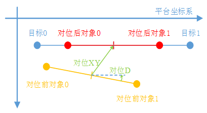
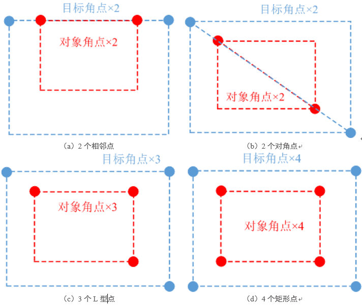
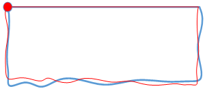
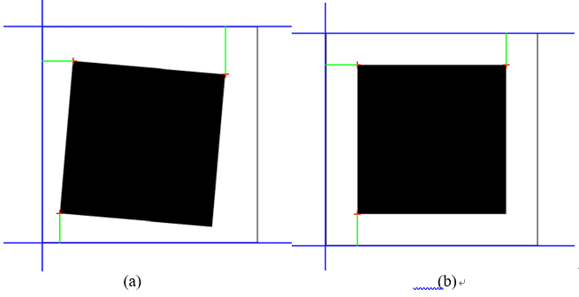
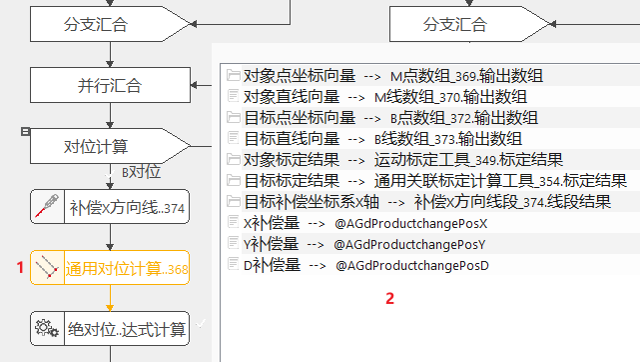

Đối vị là việc trong cùng một hệ tọa độ nền tảng (platform), dựa trên nhiều đặc trưng của vật thể (object) và mục tiêu (target), tính toán độ lệch của tay robot sao cho vật thể và mục tiêu trùng khớp hoàn toàn. Ví dụ phổ biến nhất là đối vị 2 điểm như hình dưới.

Trong tính toán đối vị đa điểm, tùy theo số lượng và cách bố trí điểm lấy mẫu, thường gặp 4 tình huống sau:

Công cụ đối vị đa điểm đa góc độ: đã biết vector tọa độ các điểm vật thể và mục tiêu + vector góc xoay cần áp dụng → tính độ lệch đối vị đa điểm.

Công cụ đối vị đa điểm-dòng: đã biết điểm + đường thẳng của vật thể và mục tiêu → tính độ lệch đối vị điểm-dòng.
Công cụ đối vị tối ưu khoảng cách: không trực tiếp cho trước vị trí mục tiêu, mà dựa trên N điểm và N (hoặc nhiều hơn) đường thẳng, tối ưu sao cho sau khi đối vị, khoảng cách từ các điểm đến các đường thẳng tương ứng gần nhất với khoảng cách chuẩn đã cho. Hình (a) bên dưới là khoảng cách ban đầu (màu xanh), hình (b) là kết quả sau khi đối vị với khoảng cách chuẩn bằng nhau.

Trong các ứng dụng Pick & Place thông thường đều có thể dùng công cụ này. Công cụ hỗ trợ 4 chế độ đối vị:
Đối vị đa điểm: biết N điểm (N≥2) trên cả vật thể và mục tiêu.
→ Thường dùng khi chỉ có điểm (không có đường thẳng), điển hình là N vòng tròn đối N vòng tròn) hoặc trong đối vị đa camera (vì chuyển điểm sang hệ nền tảng dễ hơn chuyển đường thẳng).
Đối vị đa điểm-dòng: biết N điểm + M đường thẳng (N≥1, M≥1) trên cả hai bên.
→ Phổ biến nhất trong đối vị đơn camera, vì Mark thực tế thường được tạo từ giao điểm, trung điểm của các đường thẳng → tận dụng luôn các đường thẳng đó.
Đối vị đa điểm đa góc độ: biết N điểm + M góc xoay cần áp dụng (N≥1, M≥1).
→ Ứng dụng đặc biệt: khi muốn chỉ đối vị 1 điểm duy nhất (ví dụ tâm vòng tròn đối tâm vòng tròn) mà không muốn có góc xoay dư), ta đặt góc = 0° → tránh được hiện tượng xoay không mong muốn như khi dùng chế độ điểm-dòng.
Đối vị tối ưu khoảng cách:
Tóm tắt chọn chế độ:
- Chỉ có điểm (N vòng tròn) → đa điểm
- Có cả điểm và đường thẳng (hầu hết sản phẩm thực tế) → đa điểm-dòng
- Chỉ 1 điểm duy nhất hoặc muốn cố định góc xoay = 0 → đa điểm đa góc độ
- Quan tâm khoảng cách giữa các cạnh nhiều hơn là góc → tối ưu khoảng cách
Sau khi đã hiệu chuẩn camera, có thể dùng kết quả hiệu chuẩn chuyển bất kỳ điểm ảnh nào sang tọa độ cơ học của nền tảng. Khi cần đối vị, hai camera (hoặc một camera chụp hai lần) lấy ảnh vật thể và mục tiêu → tính tọa độ cơ học của các Mark → tính độ lệch (ΔX, ΔY, Δθ) mà robot/mechanism cần di chuyển để hai bên trùng khớp.

Chế độ đối vị
Như đã trình bày ở phần trước, tùy theo cảnh ứng dụng thực tế mà chọn chế độ đối vị phù hợp. Khi thay đổi chế độ đối vị, chuỗi tham số sẽ tự động điều chỉnh tương ứng.
Chế độ bù
Người dùng có thể chọn loại bù theo nhu cầu thực tế. Khi bật chế độ bù, chuỗi tham số sẽ tự động thêm các liên kết để nối biến bù.
1) Không bù > 2) Bù theo hệ tọa độ cơ học: hướng bù X/Y/D theo chiều dương của hệ tọa độ cơ học. Ví dụ bù +1 mm theo trục X → robot sẽ di chuyển thêm +1 mm theo trục X dương của hệ cơ học. > 3) Bù theo hệ tọa độ sản phẩm: hệ tọa độ màu đỏ như hình trên, góc của hệ được xác định bởi đường thẳng trục X hoặc Y do người dùng nối vào. Hướng trục có thể đảo ngược bằng cách click vào trục đó. Sau khi xác định hệ sản phẩm, chiều dương X/Y bù sẽ trùng với chiều dương của hệ sản phẩm; chiều dương D luôn là chiều kim đồng hồ. Ví dụ bù +1 mm theo trục X → robot sẽ di chuyển theo vector thực tế trên hệ cơ học (ví dụ: 0.7 mm, 0.18 mm – chỉ là ví dụ).
Minh họa giá trị và hướng bù
Chức năng này chỉ để người dùng quan sát trực quan hướng di chuyển của vật thể trên ảnh bên phải khi thay đổi loại bù hoặc đảo hướng hệ sản phẩm. Giá trị bù thực tế khi chạy chương trình hoàn toàn do các liên kết trong chuỗi tham số quyết định.
| Tên tham số (trong thuộc tính) | Mô tả tham số |
|---|---|
| Loại nền tảng | Tùy theo ứng dụng, chọn đối vị trên nền tảng XYD hay UVW |
| Giới hạn trên kết quả đối vị X | Đặt giới hạn trên cho kết quả X, mặc định “——” (không kiểm tra). Phạm vi cho phép (-1 000 000, 1 000 000) và phải lớn hơn giới hạn dưới. Nếu giá trị X thực tế > giới hạn trên → thực thi thất bại |
| Giới hạn dưới kết quả đối vị X | Đặt giới hạn dưới cho kết quả X, mặc định “——” (không kiểm tra). Phạm vi cho phép (-1 000 000, 1 000 000) và phải nhỏ hơn giới hạn trên. Nếu giá trị X thực tế < giới hạn dưới → thực thi thất bại |
| Giới hạn trên kết quả đối vị Y | Tương tự X |
| Giới hạn dưới kết quả đối vị Y | Tương tự X |
| Giới hạn trên kết quả đối vị D | Tương tự X (đơn vị độ hoặc rad tùy hệ) |
| Giới hạn dưới kết quả đối vị D | Tương tự X |
| Tên tham số (chuỗi tham số: Đa điểm / Đa điểm-dòng / Đa điểm đa góc độ) | Mô tả tham số |
|---|---|
| Vector tọa độ điểm vật thể | Nối mảng các điểm đặc trưng của vật thể |
| Vector đường thẳng vật thể | Nối mảng các đường thẳng đặc trưng của vật thể |
| Vector tọa độ điểm mục tiêu | Nối mảng các điểm đặc trưng của mục tiêu |
| Vector đường thẳng mục tiêu | Nối mảng các đường thẳng đặc trưng của mục tiêu |
| Vector góc xoay | Nối mảng các góc cần xoay từ vật thể sang mục tiêu |
| Kết quả hiệu chuẩn vật thể | Nối kết quả hiệu chuẩn camera chụp vật thể |
| Kết quả hiệu chuẩn mục tiêu | Nối kết quả hiệu chuẩn camera chụp mục tiêu |
| Tên tham số (chuỗi tham số: Đối vị tối ưu khoảng cách) | Mô tả tham số |
|---|---|
| Vector tọa độ điểm vật thể đối vị khoảng cách | Nối mảng các điểm đặc trưng của vật thể |
| Vector đường thẳng mục tiêu đối vị khoảng cách | Nối mảng các đường thẳng đặc trưng của mục tiêu |
| Vector khoảng cách chuẩn | Nối mảng khoảng cách chuẩn từ điểm vật thể đến đường thẳng mục tiêu |
| Vector tọa độ điểm vật thể đối vị căn giữa 1 | Nối mảng điểm đặc trưng bên 1 (thường là trái/phải/trên/dưới) |
| Vector đường thẳng mục tiêu đối vị căn giữa 1 | Nối mảng đường thẳng mục tiêu bên 1 |
| Vector tọa độ điểm vật thể đối vị căn giữa 2 | Nối mảng điểm đặc trưng bên 2 |
| Vector đường thẳng mục tiêu đối vị căn giữa 2 | Nối mảng đường thẳng mục tiêu bên 2 |
| Kết quả hiệu chuẩn vật thể | Nối kết quả hiệu chuẩn camera chụp vật thể |
| Kết quả hiệu chuẩn mục tiêu | Nối kết quả hiệu chuẩn camera chụp mục tiêu |
| Tên tham số (chuỗi tham số: Giá trị bù) | Mô tả tham số |
|---|---|
| Trục X hệ tọa độ bù mục tiêu | Dùng đường thẳng đầu vào để làm trục X của hệ bù, phần mềm tự tạo trục Y vuông góc với nó |
| Lượng bù X | Lượng bù cần cộng thêm vào kết quả đối vị theo hướng X |
| Lượng bù Y | Lượng bù cần cộng thêm vào kết quả đối vị theo hướng Y |
| Lượng bù D | Lượng bù cần cộng thêm vào kết quả đối vị theo hướng xoay D |
| Tên tham số | Mô tả tham số |
|---|---|
| Kết quả đối vị X | Độ lệch tương đối X mà cơ cấu cần di chuyển |
| Kết quả đối vị Y | Độ lệch tương đối Y mà cơ cấu cần di chuyển |
| Kết quả đối vị D | Độ lệch xoay tương đối D mà cơ cấu cần xoay |
| Tọa độ nền tảng vật thể | Tọa độ của vật thể đã chuyển sang hệ nền tảng dựa trên ảnh và kết quả hiệu chuẩn |
| Tọa độ nền tảng mục tiêu | Tọa độ mục tiêu đã chuyển sang hệ nền tảng |
| Góc nền tảng vật thể | Góc của vật thể trên hệ nền tảng |
| Góc nền tảng mục tiêu | Góc của mục tiêu trên hệ nền tảng |
参见“\Samples\应用案例\对位类项目\Mesh贴Box项目\Mesh贴Box工程.gvp” 及其说明文档“应用案例\对位类项目\Mesh贴Box项目”。